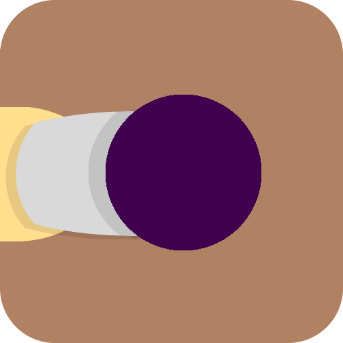

CityScenes allows you to travel around New York City with CitiBike's bike sharing program and experience a scenic route on the way. It uses the Google Maps API and open NYC data of tourist locations that gives you the optimal route from point A to point B using a CitiBike and passing through the desired number of locations. This app was a hack made during the Young Rewired State (YRS) Hackathon in NYC. It won the "Best in Show" award and gave our team the opportunity to travel to the UK to participate in the YRS UK Hackathon. Skills used include HTML, CSS, JavaScript, Bootstrap, Google Maps API, and Yahoo! Weather API.
Chainge
The missing link to a more productive lifestyle.
Chainge is a task management app that helps users keep themselves motivated in the things they've always wanted to do. People usually get highly motivated to do something one day, but then the next day lose that motivation. Chainge helps encourage and instill that motivation. By adding to the daily tasks list, users try to complete their daily tasks consistently and maintain a chain of the number of days they completed their tasks. By adding on to this chainand completing their tasks without fail, users can feel rewarded in their progress by leveling up. The calendar keeps a visual archive of tasks completed on certain days and displays the chains of tasks that were completed daily. Chainge also has a reminders list that can help a user track events to come or things to complete that may not be daily. The reminders can also be sorted by category - Hobbies, Education, or Fitness. Skills used include HTML, CSS, JavaScript, PHP, MySQL, Bootstrap, and CodeIgniter.
SafeWalk
Navigate without fear.
SafeWalk is an app (in progress) that gives you walking directions throughout Manchester, UK that avoids dangerous locations. The dangerous locations are determined with the Manchester Police open data on crime locations, and a heat map displays these areas on the map provided by the Google Maps API. An algorithm for directions detours around these places above a certain danger threshold. SafeWalk also has a Report/Live Feed feature. This feature gives the user a chance to report a concern or problem he encountered and submit it. This report will update onto the website and display in real time to anyone else viewing the website at the same time. In addition, SafeWalk's responsive design gives an optimal mobile User Interface with an easy-to-access menu. This app was a hack made during the Young Rewired State (YRS) Hackathon in the UK. Skills used include HTML, CSS, JavaScript, PHP, MySQL, Bootstrap, Google Maps API, Yahoo! Weather API, Express, Embedded JS, and MongoDB.
PureHistory
Bringing history to people of all ages.
At PureHistory (P) you will be connecting with schools K-12, colleges, universities, libraries, museums, churches, corporations, organizations, build your family tree, build your profile page, media, movies, historical documentaries, music, sports, historical events, over 300 university writers, purehistory book club, destination of historical information around the country and around the world. PureHistory is a database for everybody, from children to elders, providing an array of engaging articles and topics.
Electromechanics
Investigation of Energy Conversion Efficiency in Railguns
This study was made to create a new model that can accurately predict railgun efficiency and performance, because there is no standard model that can effectively determine the output performance of a railgun, this research explored the parameters and factors that affected how a railgun performs, and based on the results made a new equation / model to accurately predict the output efficiency of the railgun's projectile. The process involved first solving differential equations to make a predictive/perliminary equations on railgun efficiency, building a railgun from scratch, testing the projectile's output efficiency and comparing predictions to results, and finally adjusting the existing preliminary model made specifically to accurately predict railgun efficiency. This research as a part of the Partners in Science program, under the mentorship of Dr. Seongshik Oh at Rutgers University. Technologies used: LabVIEW

Mechanical Engineering
Development of Low-Cost Prosthesis through the Utilization of Granular Jamming
This project saw the creation of a new type of prosthetic arm for people in developing countries. Standard prosthetic arms, even the simple hook-arms that many amputees use, cost lots of money (thousands of dollars at the least) due to customization needs and investment of time in transitioning to using these often uneasy-to-use gripping mechanisms. Most importantly, prosthetic arms are only dreams to those, especially in developing countries, who lack the money or resources to purchase one. This new prosthetic arm (for below-elbow amputations) has an adjustable mount and an intuitive gripping mechanism, the granular jammer. Granular jamming works by using grains inside a flexible membrane and pressing the membrane against the object. After switching on a vacuum to suck the air out of the membrane, it conforms to the objects shape and can easily grip it. Not only is the arm adjustable to different sizes amputations, but it is easy to use and cost less than 100 dollars to build. This project won 1st place at the Jersey Shore Science Fair, New Jersey Academy of Sciences, Monmouth Junior Science Symposium, and 3rd place at the Delaware Valley Science Fair. This arm design is currently patent-pending.
Fluid Dynamics
The Effect of Dimpled Surfaces on the Aerodynamics of Pinewood Derby Cars
The study was done to observe the effect of implementing dimples on the surface of a vehicle and how it affects the drag force against the vehicle's performance. Two identical pinewood derby cars were the small-scale model vehicles used for the experiment, and each was modified with a layer of clay on top. However, while one car had a smooth surface, the other had a dimpled surface on the clay. The times it took for the dimpled car to reach the finish line were compared to those for the smooth car, and results showed that the dimpled car was able to travel faster than the smooth car, ultimately reducing the drag force that resisted the car's motion. This project won 3rd place at the Jersey Shore Science Fair in Physics.
Activities
Marlboro High School Varsity Swim Team - Captain Freehold-Old Bridge YMCA Winter Swim Team Marlboro Township Summer Swim Team Key Club – Officer, Editor Robotics Club – Electronics Team Leader Science Bowl Competitive NJ Physics I League Team Competitive NJ Chemistry II League Team American Computer Science League Technology Student Association Math League Classical / Jazz Band – Alto Saxophone Volunteering Swim Marathon for American Cancer Society National Honor Society Certified Lifeguard
Awards
National Merit Scholarship Semifinalist Columbia University’s Science Honors Program Student Provisional Patent Recipient AP Scholar with Distinction Young Rewired State Festival of Code, NYC – 1st Place, “Best in Show” Young Rewired State Festival of Code, UK – USA Representative, Special Guest Speaker Merck State Science Day – 3rd Place Team in Chemistry Merck State Science Day – 34th Place Individual in Chemistry New Jersey Science League – 1st Place Team in Chemistry II New Jersey Science League – 30th Place Individual in Chemistry II (Top 10%) New Jersey Key Club – Distinguished Club Editor American Junior Academy of Sciences Delegate (for 2014) New Jersey Academy of Sciences – 1st Place, Physics / Engineering and Grant-in Aid Recipient Delaware Valley Science Fair – 3rd Place, Team Projects (Engineering) Leonardo Da Vinci Society Scholarship – 1st Place in Engineering Monmouth Junior Science Symposium Poster Fair – 1st Place in Engineering and Physics Jersey Shore Science Fair – 1st Place in Team Projects (Engineering) Panasonic Robotics Creative Design Challenge – Finalist and Best Oral Presentation Technology Student Association NJ Conference – 2nd Place in VEX Robotics Marlboro High School Varsity Swim Team – Two-time Division Champion Monmouth County High School Varsity Swimming Championship – 2nd Place Team Northern Region NJ YMCA Swimming Bronze Championship – 7th Place in Butterfly Pennsylvania Regional Robotics ROV Competition - 2nd Place Jersey Shore Science Fair - 3rd Place in Physics New Jersey Science League - 4th Place Team in Physics I New Jersey Science League - 40th Place Individual in Physics I Deloitte Oil Spill Challenge - 20th Place Nationally NYU-Poly High School Forensics Challenge – Two-time National Finalist NJ State Swimming Silver/Bronze Division Competition - 11th Place in Backstroke